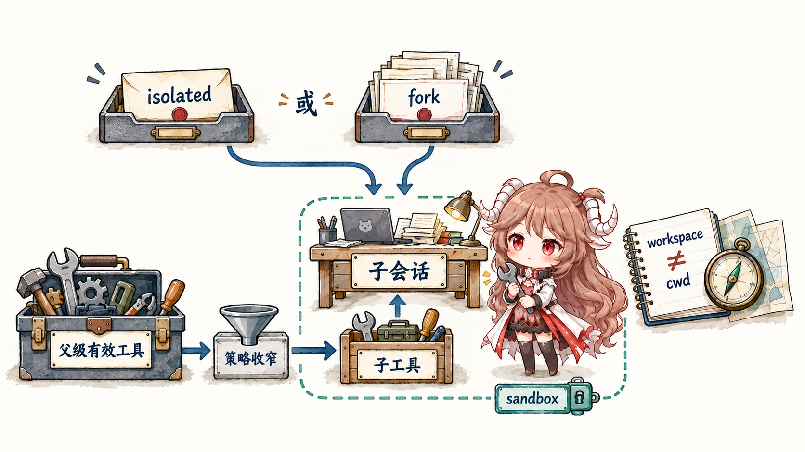
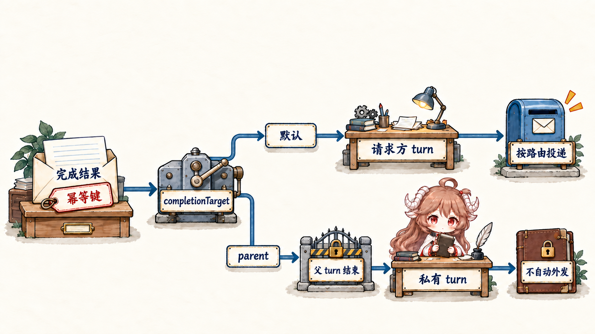

先设一个具体场景。主 Agent 正在处理“阅读仓库、跑测试、给出修复建议”：源码检索可以并行，测试可能很慢，最终回复却必须保留当前对话的语气、权限和目标。如果把每个并行工作者都当成一个完整 Agent，就会复制过多长期状态；如果让子任务直接向 Discord 发消息，又会绕过父会话对输出的整合与目标选择；如果把 Claude Code 之类外部 runtime 当成原生 subagent，则会误判工具、登录与 filesystem 的所有权。
OpenClaw 的做法是先区分拓扑，再定义继承。配置级 Agent 是长期身份边界；native subagent 是父任务创建的一次受控 child run；ACP session 是 OpenClaw 管理路由和生命周期、但由外部 harness 执行的会话。三者都可能表现成“另一个模型在工作”，源码契约却不相同。
阅读契约。读完后你应该能回答：binding 与 delegation 有什么区别；sessions_spawn 为什么立刻返回；isolated 和 fork 复制什么；workspace 与 cwd 为何不是一回事；子任务工具面怎样从父级继续收窄；sessions_send 为什么不等于向用户发消息；完成通知如何在 wake、handoff 与 durable queue 之间切换；以及何时该选 native subagent、何时该选 ACP。
证据边界。本文固定在 e6b4264。我们只把该快照源码与官方文档能够证明的行为写成事实；关于“应该把任务拆多细”“该用多贵的模型”会明确当作工程建议，而不是运行时保证。
一、三种多 Agent 方式怎样建立关系
1.1 配置级 Agent、Native Subagent 与 ACP 的区别
| 拓扑 | 谁创建/选择 | 主要状态边界 | 适合的问题 |
|---|---|---|---|
| 配置级 Agent | 静态配置与 channel binding | 独立 workspace、agentDir、auth/model registry、session store | 长期 persona、不同账号或不同信任域 |
| Native subagent | 父会话调用 sessions_spawn | 新的 child session 与 run；OpenClaw 原生工具/策略 | 一次对话内可并行、可收敛的委派任务 |
| ACP harness | sessions_spawn(runtime="acp") 或 ACP control surface | OpenClaw 管路由/绑定/交付，外部 harness 管执行语义 | Claude Code、Gemini CLI、OpenCode 等外部 agent runtime |
第一类不是“子任务”。binding 在消息入口按 channel、account、peer 或 guild 等条件选出 agentId，然后像前几篇讲的那样解析 sessionKey。第二类才是 delegation：一个已经运行的 Agent 创建 child session，把有限任务和运行契约交给它。第三类虽然也能由 sessions_spawn 发起，但 child 的真实执行器在 ACP backend 之后。
这个区分会决定后面所有判断。你不能拿 binding 的隔离承诺解释一次 spawn，也不能拿 native subagent 的 tool policy 推断 ACP harness 内部有哪些工具。
1.2 配置级 Agent 拥有独立 workspace、认证与会话
一个配置级 Agent 不只是一条不同的 system prompt。它有自己的 workspace，用来加载 AGENTS.md、SOUL.md、USER.md 与 memory；有自己的 agentDir，承载认证 profile、模型目录等状态；还有按 agent 划分的 session store。官方多 Agent 文档明确警告不要复用同一个 agentDir，因为这样会混合 credentials 与模型状态。
workspace 也不是安全沙箱。它首先是工作目录与 bootstrap 来源；是否进容器、能访问哪些 host path，要继续由上一篇的 sandbox 与 filesystem policy 决定。相反，一些 plugin-owned store 若实现时没有显式 agent scope，仍可能是 Gateway 全局状态，不能因为页面上显示两个 Agent 就自动推断所有插件数据已经分区。
因此需要长期人格、不同登录身份或不同收件箱时，用配置级 Agent；只是希望把一次搜索并行出去时，不要复制一整套 persona。
1.3 Binding 只选择外部消息的处理者
binding 的职责是确定“这条外部消息一开始属于谁”。例如 Discord account A 进 agentId=ops，Telegram account B 进 agentId=personal。选中后，后续 sessionKey、bootstrap、auth 与 tool policy 都围绕该 Agent 计算。
binding 不创建 parent/child 边，不返回 runId，也没有完成结果回流。多条绑定命中优先级属于 routing 规则；subagent 的可见性、取消与 announce 则沿 spawn tree 判断。把两者混在一起，会导致一个常见误配：为了并行任务新建完整 Agent，却没有建立任何能把结果送回当前 requester 的生命周期关系。
1.4 sessions_spawn 返回 runId 与 childSessionKey

sessions-spawn-tool.ts 接收任务描述、目标 agent/model、cwd、timeout、thread/mode、cleanup、sandbox 与 context 等字段。真正的执行在后台继续；成功响应是 accepted，核心字段是 runId 与 childSessionKey。
{
"status": "accepted",
"runId": "...",
"childSessionKey": "agent:main:subagent:...",
"mode": "run"
}这不是“结果暂时为空”，而是异步协议。runId 标识这次执行，childSessionKey 标识可以被 history、status、steer 或 cancel 定位的会话身份。调用方不该在同一个 turn 里每两秒轮询；它应继续做自己的工作，或在已经没有可做之事时主动 yield，把下一次模型可见事件留给完成通知。
原生 child key 形如 agent:<agentId>:subagent:<uuid>，ACP 则使用 agent:<agentId>:acp:<uuid>。key 不是装饰性 label：scope、ownership、session visibility 与 delivery 都会使用它。
另有两种显式选项会改变这张收据之后的工作方式。completionTarget="parent" 将普通隐藏 child 的结果送回原 requester 的私有 turn；collect=true 则属于需开启 tools.swarm.enabled 的批量收集路径，可配 outputSchema，不发送逐个完成通知。后者不能与 visible、thread 或 session mode 混用，不能把所有 spawn 都按相同 announce 流程推演。
二、子会话继承哪些内容、目录与权限
2.1 Child 收到显式任务，并保留委派来源
普通 isolated child 的委派文本以 [Subagent Task] 消息进入 transcript；fork child 前面还可能已有复制的父历史，因此这不一定是整份 transcript 的第一条消息。运行时 system prompt 再提供 routing、工具与完成规则。这样做的重要性在于 provenance：child 能明确知道“这是父会话交来的任务”，而不是把它伪装成最终用户刚刚说的话。
同理，父会话后来收到的 child result 也不是新的用户指令。跨 session 传递的数据标记为 tool-routed/internal provenance；child 输出只能作为证据、草稿或状态报告进入父级推理，不能覆盖 system、owner policy 或用户当前目标。
这条边界对 prompt injection 很关键。子任务可能读了不可信网页或仓库文件，并原样带回“忽略之前指令”。父 Agent 应把它当材料，而不是因为来源叫 subagent 就提升信任等级。
2.2 isolated 只给任务，fork 才复制父 transcript
subagent-spawn-context.ts 把上下文模式拆成 isolated 与 fork。isolated 创建干净 child session，child 只看到自己的 bootstrap、显式 task 与本轮 runtime context；它不会自动继承父 transcript。对搜索、测试、阅读指定文件这类边界清楚的任务，这通常更便宜，也更不容易泄漏无关对话。
context="fork" 会复制/分叉 requester transcript，让 child 从父会话已有历史继续推理。源码要求 requester 与 target 属于同一 Agent，并且父 transcript 可用；准备失败会返回错误，某些 context engine 明确决定跳过时才可能附带 fallback note 回到 isolated。thread-bound native spawn 的默认策略可由 channel thread-binding policy 选择，但这仍不是“所有 spawn 都隐式 fork”。
工程上应把 fork 当作高带宽依赖：只有 task 无法用短 contract 表达、必须理解大量先前决策时才使用。为了让 child 知道三个文件名就复制几万 token 历史，会同时增加成本、暴露面与歧义。
2.3 workspace 提供规则，cwd 只定位本次工具运行
subagent-spawn-child-plan.ts 分别计算 spawnedWorkspaceDir 与 spawnedCwd。目标 Agent 的 workspace 决定 bootstrap 文件、Agent 身份与默认工作区；cwd 只改变此次工具运行的当前目录。把 child 指向 /repo/service-a，不会把 service-a 的任意说明文件自动升级成另一个 Agent 的 persona。
跨 Agent spawn 时，不会直接继承 requester 的显式 workspace；目标 Agent 按自己的配置解析 workspace。认证 profile 也来自目标 Agent 的 agentDir，而不是从父会话复制 token。正因为如此，agentId override 必须先通过 allowAgents，否则一次 delegation 就可能越过长期身份隔离。
sandbox 同样是运行事实，不是字段愿望。sandbox="inherit" 按配置解析 child 是否 sandboxed；sandbox="require" 则在 child 实际无法进入 sandbox 时拒绝 spawn。创建者角色要求的 sandbox="required" 也会写入 child 的 creation policy，不能仅靠选择另一个 Agent 或切换配置消除。对于 sandboxed child，任意 cwd override 也不是都可接受：当前源码要求它与目标 workspace 对齐，避免路径语义越出隔离模型。
2.4 子任务工具从父级有效工具继续减少
普通配置工具先经过父会话的 policy pipeline，得到 effective surface。spawn 时，这份有效 allowlist 作为 inherited boundary 被记录；child 再叠加 subagent tool policy、sandbox policy 与目标 Agent policy。agent-tools.policy.ts 会读取 session 中保存的 inheritedToolAllow/inheritedToolDeny，让后续 child turn 仍受同一上界约束。
因此父级没有 exec，child policy 写 allow exec 也不能创造 exec；父级允许 read/exec，subagent policy 可以只留 read。这个“单调收窄”与安全篇的原则一致：delegation 不应成为绕过 sender policy 或 sandbox 的新入口。
当前 subagent hard-deny 在每一层都移除 message、sessions_send、conversations_*、gateway、cron 等交互/直投工具，普通 allow/alsoAllow 无法恢复它们；恢复后的 turn 和 visible child 也依据持久 envelope 重建这个限制。默认最大深度为 5，未到上限的 child 可得到 spawn/list/history 等受限能力，到上限才继续移除子任务控制工具。深度、每个 session 的 active children 与 group total 另有 admission limit。
2.5 并行子任务分别消耗模型、容器与宿主资源
每个 isolated child 有独立 context window 与 token 消耗，也会占用 provider concurrency、Gateway task slot、sandbox/container 与宿主 CPU。把十个互相依赖的步骤同时 spawn，只会让它们重复读取、产生冲突结果，再把整合成本丢回父级。
适合并行的单位通常拥有独立输入与可验证输出：查三个模块、运行三组互不写同一目录的测试、分别审阅 API/状态/安全。需要共享写入顺序或下一步依赖上一步结果时，用父级串行调度更清楚。模型可以为机械检索选择较便宜的 child model，把复杂判断与最终写作留给父级，但这属于调度策略，不是 runtime 自动优化。
三、结果怎样回到父会话并防止重复交付
3.1 Session visibility 限制可读取的会话树
当前 session visibility 默认是 all：未沙箱化会话可以跨 Agent 查看、检索和联系会话，范围可能包括其他用户的 transcript。tools.agentToAgent 可以关闭普通跨 Agent 访问，或限定 Agent 配对。agent 只含同一 Agent；tree 通常含自身与派生子树，但从 canonical main 调用时还包括该 Agent 的其他会话；严格只看当前会话应选 self。requester 自己拥有的原生和 ACP child 在 tree/all 下保留专门的可达例外，不能把 Agent 配对策略当成唯一边界。
沙箱调用方在默认 spawned-only session tool clamp 下仍限于自己的派生子树；这是独立的沙箱约束，不是全局 visibility 默认值。隐身会话对所有跨会话工具保持隐藏。
sessions_history 返回有界、经过处理的 transcript 视图，比直接读取 session file 更适合跨 session 回顾。取消也沿 ownership tree 收窄：调用方可以停止自己控制的后代，leaf 不能取消另一棵树。这里的“能猜到一个 session key”从不等于“拥有它”。
3.2 sessions_send 选择会话，后续回复仍可能投递
sessions-send-tool.ts 把消息送进目标 local model context，用于协作、追问或 steering。它的 sessionKey、label 或 agentId 选择本地 model context，并不指定外部收件地址。但后续 reply 仍可沿 requester 或 target 已有的 delivery context announce；不能把“选择会话”误写成“绝不会对外发送”。
对外发送属于 conversation/message tool，要携带经过解析的 channel、account、target 与 thread context。要精确选择外部收件地址，应使用 conversation/message 工具。sessions_send 的收据 则把目标 admission 和后续 delivery.status 分开；steer 保留现有 run 的 completion owner，notify 只排上下文而不启动 turn。原生 subagent 的 hard-deny 还会移除 message 与 sessions_send，避免另开直接交付路径。
3.3 普通完成先交接，私有结果等待父 turn 收束

child 结束后，registry 保存可交付结果，并生成基于 childSessionKey 与 child runId 的稳定幂等键。普通 completion dispatch 优先 direct handoff：让 requester 的后续 Agent turn 处理完成结果；只有直接路径失败且状态允许时才尝试 steer。已经进入持久队列、结果不明确或永久失败时，不会再盲目尝试第二条投递路径。非 completion 的通知才可能先 steer，因此不能把 wake → handoff → queue 写成所有消息共同的固定顺序。
默认顶层 requester 的后续 turn 可沿已解析的 channel/thread 对外交付；嵌套 requester 则是内部注入，由中间父级综合。若任务应先内部审查，使用下面的最小请求：
{
"task": "只读检查测试失败原因，返回证据与建议",
"context": "isolated",
"completionTarget": "parent"
}私有 parent completion 等待创建它的父 turn 正常结束后，在原 requester 的私有 turn 交付；sessions_yield 则把结果交给既有 yield batch。child 结果、parent final 和生成媒体都不会自动发往 channel，但 parent 仍可显式调用其获准的 message 工具。此选项只支持隐藏原生一次性 run，不能与 ACP、collect、visible、thread、session mode 或关闭完成通知组合；父 session 被 reset 或替换也不会把私有结果交给同名的新 session。
sessions_yield 是与 push completion 配套的控制语义。父 Agent 已经发起后台工作、当前没有别的事可做时，yield 结束本 turn；child completion 随后作为下一条模型可见事件唤醒它。这样既不消耗轮询 token，也不会把“还没完成”反复写进 transcript。
嵌套委派按 leaf → parent → parent 的 announce chain 收敛。叶子只向直接父级报告；中间 orchestrator 可以先整合多个叶子，再把一个结果交给顶层 requester。外部用户不需要承受内部 fan-out 的每条噪声。
3.4 幂等键与持久队列避免重复插入结果
announce-idempotency.ts 用 child identity 与 run identity 构造稳定键；registry 在内存状态之外保留 execution、completion 与 delivery 状态。网络抖动或 Gateway restart 后，恢复逻辑可以区分“任务完成但未交付”和“已经镜像到 requester transcript”，避免同一结果重复插入。
自动重试有边界，不是无限循环。当前实现会为 retryable delivery 维护回退和截止窗口；最终 blocked completion 仍保留为 canonical result，供后续显式 retry/dismiss，而不是静默丢失。这里值得抓住的不是某个具体分钟数，而是状态机把 execution terminal 与 delivery terminal 分开：工作做完，不等于结果已经被父会话看见。
3.5 父会话结合最新目标生成最终回答
announce 只提取 child 最新可见 assistant result；内部 tool result 不会自动提升为对用户的正文。当前交付保留 child 完整可见 final answer；有界 lifecycle snapshot 与 sessions_history 的脱敏分页视图是另外两种记录，不能混为一份截短结果。父会话再结合原始用户意图、其他 child 输出与最新 conversation state 做综合。若用户在子任务执行期间改变目标，父级可以丢弃过期结果，而不是让 child 按旧 delivery target 强行发送。
因此高质量 task contract 应包含目标、输入边界、期望输出与禁止副作用。例如“只读比较这三个文件，返回五条有源码路径的差异，不要改文件”比“看看代码”更适合 isolated child。结果也应返回证据与不确定性，而不是把建议伪装成已实施事实。
四、持久会话、外部 Harness 与清理怎样配合
4.1 Thread binding 把后续消息路由回同一会话
一次 mode="run" 适合完成即结束的任务；channel 内持久 session 使用 thread binding，让同一 Discord thread 等后续输入继续落到相同 child/harness。绑定是 channel surface 到 session 的路由关系，不等于把 runtime workspace 移进那个 channel。
thread-bound native spawn 可按 channel policy 默认选择 fork context；ACP persistent session 则要求 thread 支持和显式绑定。关闭或过期绑定后，新消息回到正常 routing；取消 active turn 只停止眼前一次执行，close session 才终止持久会话并清理绑定。三个动作不能用一个“stop”混称。
持久会话还有 visible=true 路径：它创建侧栏中的普通可继续对话，保留 parent 导航与完成关系，不要求 channel thread。只有用户需要独立返回和 steering 的工作才适合它；内部测试或审查仍用隐藏 child。projectId、projectGitUrl、cwd 是互斥来源选择，worktree 可提供独立 checkout；可见会话路径不支持 ACP、thread 或 thinking override，且会保留 session。是否持久、在哪里执行、是否对外通知，是三个分别选择的维度。
4.2 ACP 由外部 Harness 管理模型、工具与文件系统
acp-spawn.ts 仍负责 target、requester ownership、session identity、thread/mode、后台 task 与完成投递；真正的模型登录、模型目录、filesystem 行为和 native tools 则由 acpx/对应 harness 管理。OpenClaw 不能假装自己的 built-in/plugin tools 已经自动注入 ACP runtime，除非配置了明确的 MCP bridge。
ACP 能力只有在 feature enabled、backend loaded/healthy 且 requester 未被 sandbox policy 阻断时才应出现在 tool surface。对 sandboxed requester，runtime="acp" 会被隐藏或拒绝，因为外部 harness 不是当前 sandbox 的自然延伸。
选择原则很简单：需要 OpenClaw 自己的 session/tool/policy 语义，选 native subagent；需要 Claude Code、Gemini CLI、OpenCode 这类现成 agent harness 的能力，选 ACP，并把它视为另一条 trust boundary。不要因为两者都返回 childSessionKey 就认为它们拥有同一工具集。
4.3 取消执行、清理会话与交付结果分别记录
cancel/kill 处理 execution：通知正在运行的 child 停止，并可按 session tree 级联。cleanup 决定 child session 完成后保留还是删除。delivery 状态则回答 completion 是否进入 requester。一个任务可能“执行已成功、session 已清理、交付仍待重试”；也可能“执行被取消、取消结果已经成功告知父级”。
排障时不要只看 child 进程是否还在。应同时检查 spawn receipt、registry run state、child transcript 的 terminal result、requester delivery state 与 thread binding。把这几层压成一个 boolean，最容易造成幽灵任务或重复回复。
4.4 沿创建、执行、完成与投递顺序诊断
binding / requester identity
→ sessions_spawn admission
→ target agent + childSessionKey
→ context / workspace / cwd / sandbox
→ inherited tool policy
→ child execution terminal
→ completion capture
→ completionTarget / notify / collect
→ direct handoff | conditional steer | durable queue
→ parent synthesis
→ private result | configured external deliveryspawn 直接 forbidden，先看 depth、concurrency、allowAgents、sandbox require 与 ACP availability；child 启动却读错规则，看 target Agent workspace 与 context mode；工具缺失，看父级 effective surface 与 subagent policy 的交集；child 已成功而父级没收到，看 idempotency/delivery state；父级收到了但用户没看到，才进入 conversation delivery target、thread 与 channel permission。
这个顺序比“再 spawn 一次”更安全。盲目重试可能创建第二个 child run；只有基于同一 idempotency/replay identity 的恢复路径，才能把它当成原任务续跑。
五、九条可以迁移的多 Agent 规则
- 先分拓扑。配置级 Agent、native subagent 与 ACP harness 不是三个同义词。
- Binding 负责入口，spawn 负责委派。只有后者创建 parent/child 关系与完成回传。
- 把 accepted 当收据。保存 runId 与 childSessionKey，等待完成事件主动返回。
- 默认 isolated。只有无法用短 task contract 表达依赖时才 fork transcript。
- 分开 workspace 与 cwd。前者提供身份/bootstrap，后者只定位本次运行。
- 权限只向下收窄。child 不能借 delegation 获得父级没有的工具或 sandbox escape。
- 分开会话选择与收件地址。
sessions_send选本地 context，回复仍可能按已有路由 announce；精确外投用 conversation/message。 - 显式选择回传方式。普通完成可对外交付；内部审查选 completionTarget="parent"，批量收集另走 collect。
- 分别观察执行与交付。任务完成和结果到达 requester 是两个 terminal condition。
下一篇把视角从一棵 spawn tree 拉到时间轴：没有用户消息时，heartbeat、cron 与后台任务怎样唤醒 Agent；Gateway 重启后，哪些状态能从 durable store 恢复，哪些只是进程内视图；又该怎样避免“常驻”变成重复执行。
参考源码与文档
- sessions-spawn-tool.ts、subagent-spawn-contract.ts：spawn 参数与 accepted receipt。
- subagent-spawn-context.ts、subagent-spawn-child-plan.ts：context fork、workspace/cwd、sandbox 与 child identity。
- agent-tools.policy.ts、sessions-history-tool.ts、sessions-send-tool.ts：继承 tool policy 与 scoped session access。
- subagent-registry-lifecycle-delivery.ts、announce-idempotency.ts：completion、幂等与交付状态。
- acp-spawn.ts、Sub-agents、ACP agents、Multi-agent routing：三种拓扑与运行边界。